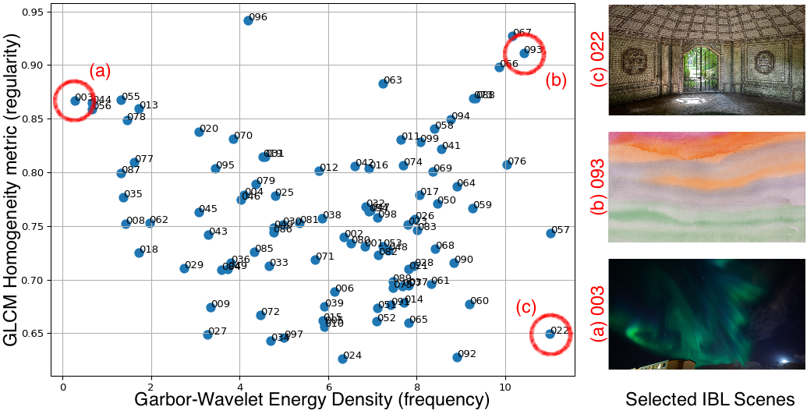

Each tile is essentially it's own 1080p video, so youtube will compress this even with 4k settings. You can click here for the original image-based side-by-side results.

This paper introduces a Gaussian Splatting (GS) approach to relighting and reconstructing 3-D scenes containing real in-camera image-based lighting (RIC-IBL) sources. This is applied Virtual Studio (VS) film production, where LED walls project live virtual backgrounds that produce RIC-IBL effects. The goal of VS reconstruction and relighting (VSR) is to provide the ability to change the RIC-IBL background texture and propagate the lighting changes to a 3-D scene. As no prior RIC-IBL research exists, this paper establishes a robust platform for future work by introducing a novel pipeline, a handful of baselines for RIC-IBL texture sampling, and several datasets including real VS scenes. The main method is a geometry-independent lighting model that explicitly represents the IBL texture coordinates and lighting intensity as view-dependent GS parameters. This avoids computing physically-based events linked to inverse rendering (IR). Hence, our method does not rely on depth/normal priors, is capable of reconstructing diverse scenes including transparent objects, and can be implemented without custom CUDA or RTX code. The final model only uses less than 5GB of RAM and VRAM for training 1080p scenes. In practice, our method removes the need for costly VS-specific hardware and offers numerous possibilities for revolutionizing the VS production process to benefit post production artistry.